Polusi Udara di Indonesia
Oleh : Adrian, Aloy, Derel
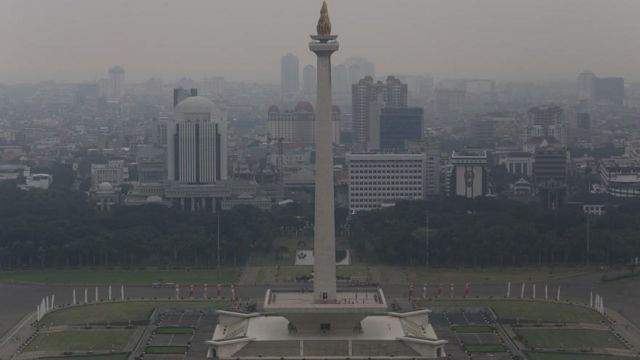
Pendahuluan
Polusi udara adalah pencemaran udara oleh zat-zat lain yang berbahaya seperti carbon dioksida(CO2), cloro fluoro carbon(CFC), Nitrogen Oksida(NO), dan lain-lain. Zat-zat berbahaya ini dapat berasal dari kendaraan bermotor, asap pabrik, emisi AC, pembakaran sampah, dan lain-lain. Polusi udara kini tidak hanya mengancam kualitas udara yang kita hirup, namun juga memiliki dampak yang serius terhadap kesehatan kita.
Polusi Udara di Indonesia
Polusi udara merupakan salah satu masalah lingkungan yang paling mendesak di dunia saat ini. Di Indonesia, polusi udara juga telah menjadi tema yang tidak lepas dari perbincangan publik akhir-akhir ini karena telah menjadi ancaman serius terhadap kesehatan masyarakat dan lingkungan. Diukur dengan angka harapan hidup, polusi udara merupakan salah satu ancaman terbesar bagi kesehatan di Indonesia. Mengurangi 1,4 tahun dari angka rata-rata harapan hidup penduduk Indonesia. Untuk membandingkan, diabetes dan infeksi ginjal mengurangi angka rata-rata harapan hidup sebesar 1,2 tahun, sedangkan infeksi saluran pernapasan mengurangi angka rata-rata harapan hidup sebesar 1 tahun. Diambil dari laporan Air Quality Life Index (AQLI) yang diterbitkan oleh Energy Policy Institute, University of Chicago.
Hal ini mengingat bahwa polusi udara bukan hanya sebatas masalah lingkungan, tetapi juga memiliki dampak ekonomi yang signifikan dan dengan demikian menciptakan dilema di antara pertumbuhan ekonomi yang diinginkan dan pelestarian lingkungan yang semakin mendesak. Oleh karena itu, artikel ini akan membahas rekomendasi untuk mengatasi polusi udara di Indonesia, dengan mempertimbangkan sudut pandang dari buku “Freakonomics” dan “SuperFreakonomics” oleh Steven Levitt dan Stephen Dubner.
Untuk mengecek indeks kualitas udara di daerahmu, dapat klik: Cek IQA
Dampak Polusi Udara Bagi Tubuh
Menurut Budi Gunadi Sadikin selaku Menteri Kesehatan, pada penyakit paru polusi udara menyumbang 15-30% sehingga penting bagi kita untuk mengetahui berbagai ancaman yang dapat ditimbulkan akibat polusi udara. Berikut ini merupakan beberapa dampak yang dapat ditimbulkan dari polusi udara terhadap kesehatan manusia, diantaranya adalah:
- Menimbulkan flek dan memicu serangan asma akibat paparan HC & SOx (Hidrocarbon dan Sulfur oksida)
- Memicu iritasi dan peradangan pada mata
- Iritasi pada saluran napas akibat banyaknya paparan debu-debu kotor
- Menyebabkan kulit menjadi gatal dan bersisik
- Kandungan Timbal pada udara kotor apabila masuk ke saluran pernapasan anak, bisa menyebabkan penghambatan pertumbuhan dan perkembangan anak
- Memicu kanker paru-paru
Penyebab Polusi Udara
- Kebakaran Hutan
- Pembangkit Listrik
- Gunung Berapi Meletus
- Kendaraan Bermotor
- Pabrik
- Rumah Tangga
- Sampah
- Pertanian
- Pertambangan
- Penebangan Liar
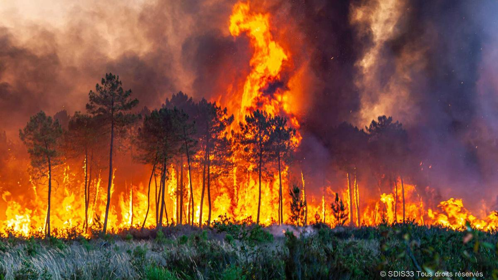
Kebakaran hutan, baik yang disengaja maupun yang tidak disengaja, akan menimbulkan asap yang pekat. Selain dapat mencemari udara, asap tersebut juga dapat mengganggu kesehatan, seperti sesak napas.
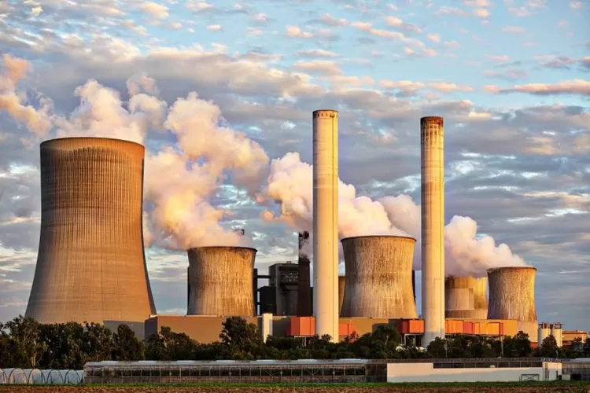
Pembangkit listrik yang masih menggunakan bahan bakar berupa gas, batu bara, atau minyak bumi akan menghasilkan zat-zat berbahaya, seperti karbon dioksida, nitrogenoksida, partikulat, dan sulfurdioksida, yang dapat mencemari udara. Lama-kelamaan, zat-zat berbahaya tersebut akan menyebabkan pemanasan global.
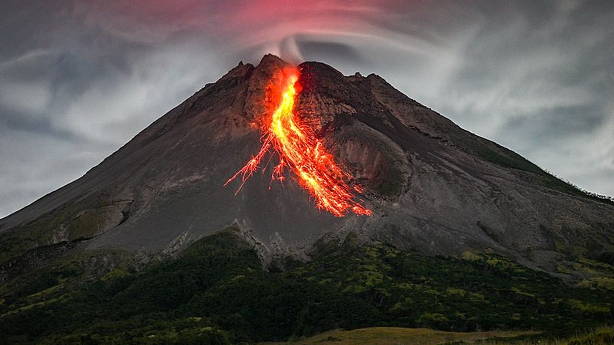
Saat meletus, gunung berapi mengeluarkan abu vulkanik, gas beracun, pasir, dan material berbahaya lainnya. Hasil letusan tersebut akan mencemari udara dan dapat mengganggu kesehatan.
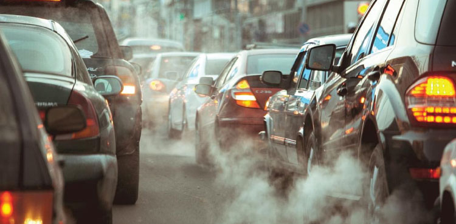
Zat-zat yang dihasilkan dari pembakaran kendaraan bermotor, seperti karbonmonoksida, nitrogenoksida, dan volatil, dapat mencemari udara dan merusak lapisan ozon.
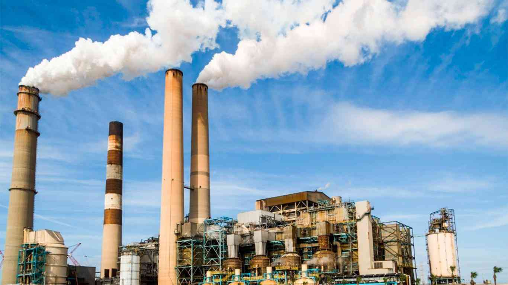
Asap yang dikeluarkan melalui cerobong-cerobong asap pabrik mengandung zat polutan yang sangat berbahaya, seperti hidrokarbon dan karbonmonoksida.
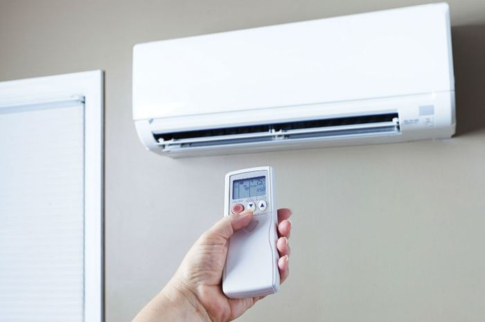
Ternyata, aktivitas rumah tangga juga turut menjadi penyebab udara tercemar. Memasak dengan menggunakan kayu bakar, membakar sampah, menggunakan AC dan hair dryer, serta mengecat rumah, dapat mengahsilakn zat polutan yang sangat mengganggu.
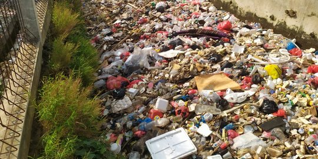
Timbunan sampah yang membusuk akan mengeluarkan bau busuk, menyengat, dan tidak sedap. Jika dibiarkan, bau ini akan mencemari udara.
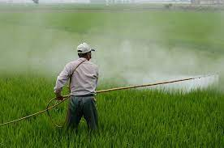
Di dalam dunia pertanian, pasti tidak lepas dari penggunaan insektisida, pestisida, dan pupuk kimia. Padahal, ketiga benda tersebut mengandung zat-zat kimia berbahaya, seperti ammonia, yang dapat mencemari udara, tanah, dan air.
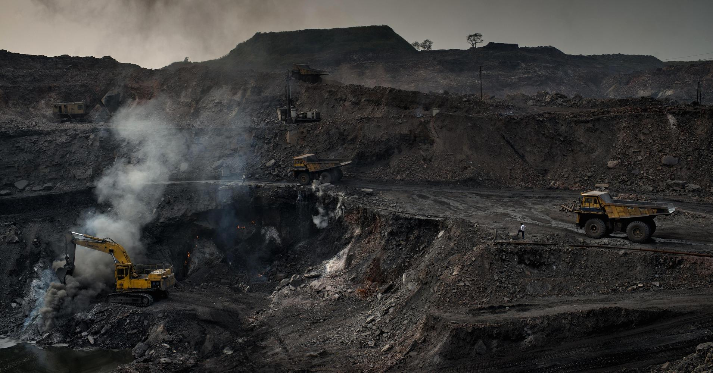
Untuk mengambil mineral dari dalam bumi, diperlukan peralatan besar sehingga menghasilkan debu dan mengeluarkan zat kimia berbahaya yang dapat mengganggu kesehatan, terutama kesehatan para pekerja tambang.
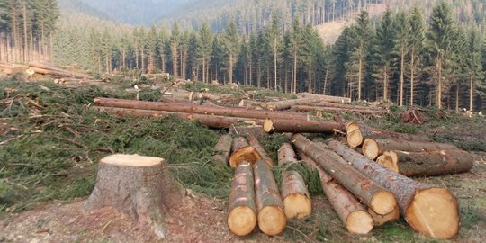
Penebangan liar yang semakin marak terjadi membuat hutan menjadi rusak dan gundul. Sisa-sisa dari penambangan berupa daun dan ranting kering menjadi benda yang mudah terbakar sehingga menimbulkan asap yang mencemari udara. Selain itu, fungsi hutan sebagai paru-paru dunia tidak dapat bekerja dengan baik.